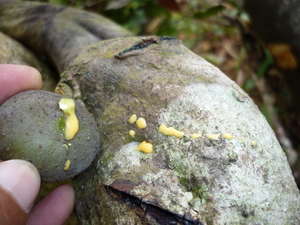

gitè 
/gitɔʔ/
n.
“sap”
n.
sap
Ka seini ne lalag iyan sika se malumiket ne hendue te weyig ne egpuun diyè te kayu ne egpakabuling te manggad labi e ke maangkag wey ka egkehal e kayi egkaayun ne egsuluen.
Giteen ne kayu ka baliti.
The baliti tree has a lot of sap.
Natihisan te gitè te nangka ka mata ni Linu su egleleng-ag ma sikandin te amey rin ne migpupu te nangka.
Linu got a drop of jackfruit sap in his eye because he was looking up at his father picking a jackfruit.
cf. ditè
Eng. sap
Tag. dagtâ
Ceb. tagok
Ilo.: túbbug
OCM: Ethnobotany (824)
DDP: Parts of a plant (1.5.5)
Online dict status: -
Usage level: M
v.
for something, especially a tree or a plant (eggihitè, miggihitè/inggihitè, gihite, agent, eg><ø-rdpCV-) to ooze with sap
Eggihitè ka sahing.
Eng. ooze sap; sap ooze
Online dict status: -
Usage level: M
Updated by: RJH,AAA,RJH,QDL,QDL,RAA,RJH
Last updated: 13/Apr/2015
This page last updated: 28-Dec-2019
Copyright © 2009-2014, Matigsalug Language Christian Association, Inc